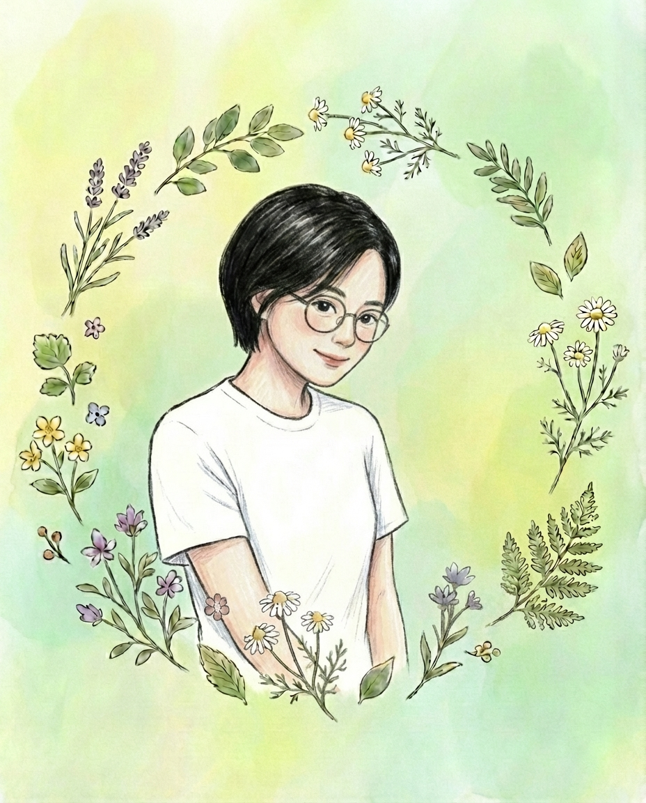

Profile
堂山 樹
オンライン事務・業務整理サポート
看護師・保健師として13年以上勤務しました。
眼科を中心に、外来・病棟・手術室を経験し、物品管理、職員健診、マニュアルや院内資料の整備にも携わってきました。

現場経験を、使いやすい事務支援へ
整理されていない情報を分類し、誰が見ても進めやすい形へ整えることを得意としています。
現在は、医療現場で培った正確性と業務整理の経験を、オンライン事務・資料作成に生かしています。
主な使用ツール：Google Workspace、Canva、Notion、各種AIツールなど
Availability
対応時間
平日9:00〜14:00を中心に対応可能です。必要に応じて、21:00〜22:00頃の確認・返信にも対応しています。
日中の予定や長期休暇期間によって稼働時間が変動する場合がありますが、事前にご相談のうえ、納期に合わせて調整いたします。
AI
AI活用について
AIは、文章のたたき台、要約、情報整理、資料構成、画像制作補助などに活用する場合があります。
利用の可否や方法は、案件内容とクライアント様のルールに合わせ、AIの出力は人が確認・調整します。
個人情報や機密情報を含む資料については、事前に取り扱い方法を確認します。